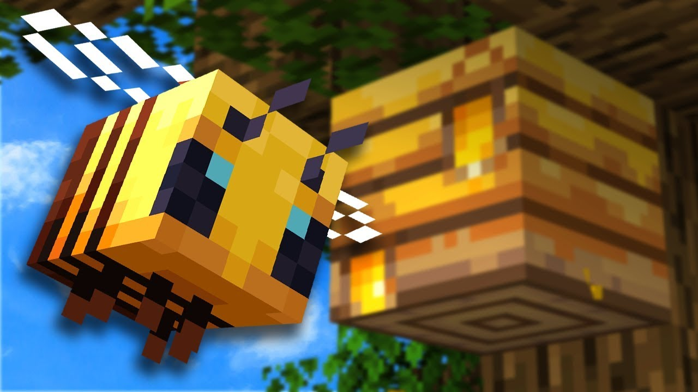
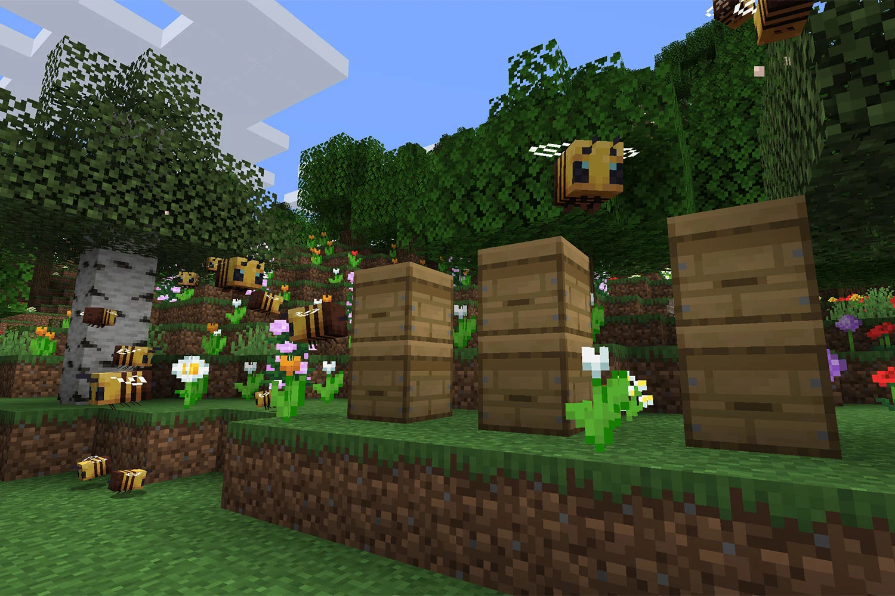

The 1.15 minecraft version entered the game on December 10, 2019
The update introduces a lot of content to the game, including:
Bees mob
Bees are new creatures in Minecraft that inhabit beehives. They collect pollen from flowers to produce honey, which can be used as food and in various recipes. Bees are friendly unless provoked and can be bred using flowers. They play a significant role in crop pollination and introduce new gameplay opportunities for farming and exploration.

Honey
Honey is a sweet and sticky substance produced by bees. It can be harvested and used as food, brewing ingredient, and crafting material. Honey blocks are solid blocks with a sticky property, affecting movement and providing interesting mechanics for both gameplay and redstone contraptions.

Beehive and Bee nest
Beehives and bee nests are structures in Minecraft where bees reside. Beehives can be crafted using honeycomb and wood planks, while bee nests naturally generate in trees or in the Flower Forest biome. Bees collect pollen and produce honey, which can be harvested from these structures. Beehives and bee nests promote pollination and can increase the growth of nearby crops and plants. Taking care of these structures helps maintain a sustainable honey supply and supports the bee population in Minecraft.
